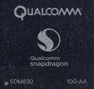
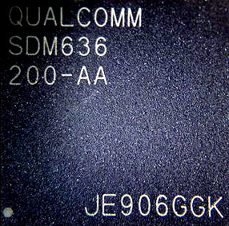
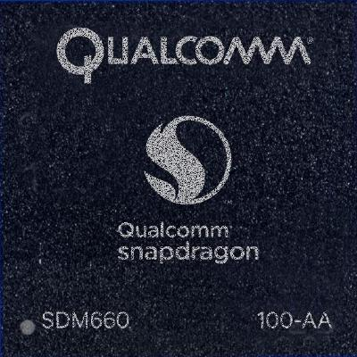

Qualcomm Snapdragon 660 (SDM660)
|
 Qualcomm SDM630 in ceramic package | |
| Manufacturer | Qualcomm |
|---|---|
| Name | SDM630 |
| Codenames | msmtriton/apqtriton |
| Architecture | aarch64 |
| CPU | 4x Cortex-A53 PERF cluster + 4x Cortex-A53 PWR cluster |
| GPU | Adreno 508 |
| Year | 2017 |
| Process | 14nm |
| Mainline | yes |
| Community Page | https://github.com/sdm660-mainline |
| Components | |
| CPU |
Partial
|
| UART |
Works
|
| Storage |
Works
|
| USB |
Partial
|
| Display |
Partial
|
| GPU | |
| Pinctrl |
Works
|
| I²C |
Works
|
| Audio | |
| Video | |
| Thermal |
Partial
|
| WiFi | |
| Bluetooth | |
| Modem |
Partial
|
| GPS | |
| Camera | |
| Suspend | |
{kind=link}
|
 Qualcomm SDM636 in ceramic package | |
| Manufacturer | Qualcomm |
|---|---|
| Name | SDM636 |
| Architecture | aarch64 |
| CPU | 4x Kryo 260 Gold PERF cluster + 4x Kryo 260 Silver PWR cluster |
| GPU | Adreno 509 |
| Year | 2017 |
| Process | 14nm |
| Mainline | yes |
| Community Page | https://github.com/sdm660-mainline |
| Components | |
| CPU |
Partial
|
| UART |
Works
|
| Storage |
Works
|
| USB |
Partial
|
| Display | |
| GPU | |
| Pinctrl |
Works
|
| I²C |
Works
|
| Audio | |
| Video | |
| Thermal | |
| WiFi | |
| Bluetooth | |
| Modem | |
| GPS | |
| Camera | |
| Suspend | |
{kind=link}
|
 Qualcomm SDM660 in ceramic package | |
| Manufacturer | Qualcomm |
|---|---|
| Name | SDM660 |
| Codenames | msmfalcon/apqfalcon |
| Architecture | aarch64 |
| CPU | 4x 2.2 GHz Kryo 260 Gold, 4x 1.84 GHz Kryo 260 Silver |
| GPU | Adreno 512 |
| Year | 2017 |
| Process | 14nm |
| Mainline | yes |
| Community Page | https://github.com/sdm660-mainline |
| Components | |
| CPU |
Partial
|
| UART |
Works
|
| Storage |
Partial
|
| USB |
Partial
|
| Display | |
| GPU | |
| Pinctrl |
Works
|
| I²C | |
| Audio | |
| Video | |
| Thermal | |
| WiFi | |
| Bluetooth | |
| Modem | |
| GPS | |
| Camera | |
| Suspend | |
{kind=link}
General description
SDM660/636/630 are Qualcomm SoCs released in 2017, with mostly out-of-tree mainline support.
According to Wikipedia, they all are pretty similar. Their advantage is price; these SoCs are usually used in middle-range devices.
Closest similar SoC is MSM8998 Snapdragon 835 (which has decent mainline support), and it seems that several drivers from MSM8998 can be reused for SDM660.
Devices
SDM660 (Snapdragon 660)
| Device | Codename | Mainline |
|---|---|---|
| Asus Zenfone 4 | asus-z01k | |
| Xiaomi Mi 8 Lite | xiaomi-platina | P |
| Xiaomi Mi A2 | xiaomi-jasmine_sprout | N |
| Xiaomi Mi Note 3 | xiaomi-jason | |
| Xiaomi Mi Pad 4 | xiaomi-clover | Y |
| Xiaomi Redmi Note 7 | xiaomi-lavender | P |
SDM636 (Snapdragon 636)
| Device | Codename | Mainline |
|---|---|---|
| Asus Zenfone Max Pro M1 | asus-x00td | N |
| Sony Xperia 10 Plus | sony-mermaid | Y |
| Xiaomi Redmi Note 5 Pro | xiaomi-whyred | |
| Xiaomi Redmi Note 6 Pro | xiaomi-tulip | N |
SDM630 (Snapdragon 630)
| Device | Codename | Mainline |
|---|---|---|
| HMD Global Nokia 6.1 | nokia-PL2 | |
| Motorola Moto X4 | motorola-payton | |
| Sony Xperia 10 | sony-kirin | Y |
| Sony Xperia XA2 | sony-pioneer | Y |
| Sony Xperia XA2 Plus | sony-voyager | Y |
| Sony Xperia XA2 Ultra | sony-discovery | Y |
Battery/Charging
Most devices seem to use the PMIC-provided QPNP-charger which currently does not have a mainline driver.
CPU
All cores are up, PSCI is working. Marked as partial because there is no support for CPU frequency scaling. It is advised to use only 4 CPUs for now due to the lack of cluster interconnect scaling, which results in 8 cores being slower than 4.
Display
At least four 630 boards can successfully use display (both command- and video-mode) via DRM/MSM (and of course CPU rendering) with some (for now) out-of-tree patches. Most devices make use of PMIC-provided WLED backlight, which does have a mainline driver, but there happens to be an issue with it not working.
GPU
Adreno 508/509/512 are not supported in the mainline kernel yet.
There are patches sent to upstream for enabling support for those GPUs. See kholk commits to upstream for more info
Modem Subsystem
The remote processor responsible for modem subsystem shows up and shows *some* signs of life, but neither the modem itself, nor the Wi-Fi chip currently work. The phone also gets very hot with it enabled, which might suggest it's not really fine right now. Of course it needs firmware.
Pinctrl
Was ported from downstream kernel to mainline by opendata in 2018.
SMMUs / IOMMUs
This platform is very picky about its SMMUs and therefore requires many downstream workarounds to be implemented. Upstream maintainers aren't exactly happy with that.
https://patchwork.kernel.org/project/linux-arm-msm/list/?series=355881
Storage
At least SDHCI (eMMC) was tested to work. UFS is untested (if anybody knows about a sdm630/36/60-based device using UFS, leave a note here!).
USB
There is WIP support for USB 2.0 only (no USB 3) by Konrad Dybcio in https://github.com/konradybcio/linux/commits/ninges_labs
Do note that most devices only have USB 2.0 wired up in hardware.
WiFi
Wireless network should be available via the ath10k_snoc driver, provided the modem subsystem is alive. It also needs firmware (which is possibly signed per-device or per-vendor - though it's unconfirmed!).
Work done so far
Who is working on it
- User:opendata worked on initial basic SoC support (pinctrl-sdm660, gcc-sdm660) (+ various branches)
- Pavel Dubrova worked on SDM630 SoC support based on kernel 5.3. It is unknown where the sources are located.
- User:Alexeymin tried to continue opendata's work. WIP Branch is in linux-postmarketos repo.
- Konrad Dybcio in https://github.com/konradybcio/linux/commits/ninges_labs (warning: frequent forcepushes!)
- SoMainline on GitHub: https://github.com/SoMainline/linux/
Hopefully this can serve as history log, a step-by-step example of what needs to be done to bring new SoC support to mainline kernel from zero.
Commits merged in 4.20:
- pinctrl: qcom: Add sdm660 pinctrl driver submitted by opendata
- pinctrl: sdm660: Set tile property for pingroups
- clk: qcom: Add Global Clock controller (GCC) driver for SDM660 by Taniya Das, who sent opendata's unsubmitted work after opendata had disappeared
Commits merged in 5.1:
- soc: qcom: smd-rpm: Add sdm660 compatible by opendata
Commits merged in 5.6:
- dt-bindings: arm: Add kryo260 compatible by alexeymin
Commits merged in 5.8:
- dt-bindings: arm: qcom: Add sdm630 and sdm660 SoCs by alexeymin
- arm64: dts: qcom: Add SDM660 SoC support done by opendata sent by alexeymin
- arm64: dts: qcom: Add Xiaomi Redmi Note 7 (lavender) by alexeymin
Commits merged in 5.9:
- soc: qcom: socinfo: Add socinfo entry for SDM630 by konradybcio (why not do it for 636 and 660 in one go though?)
- clk: qcom: smd: Add support for SDM660 rpm clocks by konradybcio
- arm64: dts: qcom: pm660(l): Add base dts files by konradybcio
- arm64: dts: qcom: sdm630: Add sdm630 dts file by konradybcio
- arm64: dts: qcom: Add support for Sony Xperia XA2/Plus/Ultra (Nile platform) by konradybcio
- arm64: dts: qcom: Add support for Sony Xperia 10/10 Plus (Ganges platform) by Martin Botka
- pinctrl: qcom: spmi-gpio: Add pm660(l) compatibility by konradybcio
- Documentation: Document pm660(l) SPMI GPIOs compatible by konradybcio
- clk: qcom: gcc-sdm660: Add missing modem reset by konradybcio
- clk: qcom: gcc-sdm660: Fix up gcc_mss_mnoc_bimc_axi_clk by konradybcio
- drm/msm/dsi: Add phy configuration for SDM630/636/660 by konradybcio
- drm/msm/mdp5: Add MDP5 configuration for SDM630 by konradybcio
- drm/msm/dsi: Add DSI configuration for SDM660 by konradybcio
- drm/msm/mdp5: Add MDP5 configuration for SDM636/660 by konradybcio
- mailbox: qcom: Add sdm660 hmss compatible by konradybcio
- regulator: core: Enlarge max OF property name length to 64 chars by kholk
- regulator: qcom_spmi: Add support for new regulator types by kholk
- regulator: qcom_spmi: Add PM660/PM660L regulators by kholk
- regulator: dt-bindings: Document the PM660/660L SPMI PMIC entries by kholk
- regulator: qcom_smd: Add PM660/PM660L regulator support by kholk
- regulator: dt-bindings: Document the PM660/PM660L PMICs entries by kholk
- Merge series "Support for PM660/PM660L SPMI and SMD regulators" from kholk
Commits merged in 5.10:
- arm64: dts: sdm630: Temporarily disable SMMUs by default by konradybcio
- clk: qcom: gcc-sdm660: Fix wrong parent_map by konradybcio
- regulator: dt-bindings: Document the PM660/PM660L PMICs entries by kholk
- regulator: qcom_smd: Add PM660/PM660L regulator support by kholk
- regulator: dt-bindings: Document the PM660/660L SPMI PMIC entries by kholk
- regulator: qcom_spmi: Add PM660/PM660L regulators by kholk
- regulator: qcom_spmi: Add support for new regulator types by kholk
Commits merged in 5.11:
- iommu: arm-smmu-qcom: Add sdm630/msm8998 compatibles for qcom quirks by konradybcio
- media: camss: csiphy: Set rate on csiX_phy clock on SDM630/660 by kholk
- media: camss: csiphy-3ph: Add support for SDM630/660 by kholk
- media: camss: Add support for SDM630/636/660 camera subsystem by kholk
- media: dt-bindings: media: qcom,camss: Add bindings for SDM660 camss by kholk
- mfd: qcom-spmi-pmic: Add support for PM660/PM660L by kholk
- arm64: dts: sdm630: Fix dma node name by vinodkoul
- soc: qcom: rpmpd: Add SDM660 power-domains by konradybcio
- dt-bindings: power: rpmpd: Add SDM660 power-domains bindings by konradybcio
Commits merged in 5.12:
- dt-bindings: clock: Add QCOM SDM630 and SDM660 graphics clock bindings by kholk
- clk: qcom: Add SDM660 GPU Clock Controller (GPUCC) driver by kholk
- clk: qcom: rcg2: Stop hardcoding gfx3d pingpong parent numbers by kholk
- dt-bindings: clock: Add support for the SDM630 and SDM660 mmcc by kholk
- clk: qcom: Add SDM660 Multimedia Clock Controller (MMCC) driver by Martin Botka
- clk: qcom: gcc-sdm660: Mark GPU CFG AHB clock as critical by kholk
- clk: qcom: gcc-sdm660: Mark MMSS NoC CFG AHB clock as critical by kholk
- clk: qcom: gdsc: Implement NO_RET_PERIPH flag by kholk
- drm/msm/dpu: Add prog_fetch_lines_worst_case to INTF_BLK macro by kholk
- drm/msm/a5xx: Add support for Adreno 508, 509, 512 GPUs by kholk
- arm64: dts: qcom: sdm630: add ICE registers and clocks by ebiggers
- dt-bindings: phy: qcom-qusb2: Document SDM660 compatible by kholk
- phy: qcom-qusb2: Add configuration for SDM660 by kholk
Commits merged in 5.13:
- interconnect: qcom: sdm660: Fix kerneldoc warning by Georgi Djakov
- media: dt-bindings: media: camss: Add qcom,sdm660-camss binding by Robert Foss
- interconnect: qcom: Add SDM660 interconnect provider driver by kholk
- dt-bindings: interconnect: Add bindings for Qualcomm SDM660 NoC by kholk
Commits merged in 5.15:
- drm/msm/dsi: dsi_phy_14nm: Take ready-bit into account in poll_for_ready by Marijn Suijten
- arm64: dts: qcom: sdm630: Add missing a2noc qos clocks by Shawn Guo
- interconnect: qcom: sdm660: Add missing a2noc qos clocks by Shawn Guo
- dt-bindings: interconnect: sdm660: Add missing a2noc qos clocks by Shawn Guo
- interconnect: qcom: sdm660: Correct NOC_QOS_PRIORITY shift and mask by Shawn Guo
- interconnect: qcom: sdm660: Fix id of slv_cnoc_mnoc_cfg by Shawn Guo
- clk: qcom: gcc-sdm660: Replace usage of parent_names by Bjorn Andersson
- clk: qcom: gcc-sdm660: Move parent tables after PLLs by Stephen Boyd
- drm/msm/dsi: Fix DSI and DSI PHY regulator config from SDM660 by konradybcio
- arm64: dts: qcom: sdm630: don't use underscore in node name by vinodkoul
- arm64: dts: qcom: sdm660: use reg value for memory node by vinodkoul
- arm64: dts: qcom: sdm630: don't use empty memory node by vinodkoul
- arm64: dts: qcom: sdm630: Add DMA to I2C hosts by konradybcio
- arm64: dts: qcom: sdm630: Add I2C functions to I2C pins by konradybcio
- arm64: dts: qcom: sdm630-nile: Remove gpio-keys autorepeat by konradybcio
- arm64: dts: qcom: sdm630-nile: Enable uSD card slot by konradybcio
- arm64: dts: qcom: sdm630-nile: Specify ADSP firmware name by konradybcio
- arm64: dts: qcom: sdm630-nile: Add Synaptics touchscreen. by konradybcio
- arm64: dts: qcom: sdm630-xperia: Retire sdm630-sony-xperia-ganges.dtsi by konradybcio
- arm64: dts: qcom: sdm630-nile: Add Volume up key by konradybcio
- arm64: dts: qcom: sdm630-nile: Add USB by konradybcio
- arm64: dts: qcom: sdm630-nile: Use &labels by konradybcio
- arm64: dts: qcom: sdm630-xperia-nile: Add all RPM and fixed regulators by konradybcio
- arm64: dts: qcom: sdm660: Add required nodes for DSI1 by konradybcio
- arm64: dts: qcom: sdm630: Configure the camera subsystem by kholk
- arm64: dts: qcom: sdm630: Add IMEM node by konradybcio
- arm64: dts: qcom: Add device tree for SDM636 by konradybcio
- arm64: dts: qcom: sdm660: Make the DTS an overlay on top of 630 by konradybcio
- arm64: dts: qcom: pm660(l): Add VADC and temp alarm nodes by konradybcio
- arm64: dts: qcom: pm660l: Support SPMI regulators on PMIC sid 3 by konradybcio
- arm64: dts: qcom: pm660l: Add WLED support by konradybcio
- arm64: dts: qcom: pm660: Support SPMI regulators on PMIC sid 1 by kholk
- arm64: dts: qcom: sdm630: Add Adreno 508 GPU configuration by konradybcio
- arm64: dts: qcom: sdm630: Raise tcsr_mutex_regs size by konradybcio
- arm64: dts: qcom: sdm630: Add ADSP remoteproc configuration by konradybcio
- arm64: dts: qcom: sdm630: Add thermal-zones configuration by konradybcio
- arm64: dts: qcom: sdm630: Add modem/ADSP SMP2P nodes by konradybcio
- arm64: dts: qcom: sdm630: Add TSENS node by konradybcio
- arm64: dts: qcom: sdm630: Add qcom,adreno-smmu compatible by kholk
- arm64: dts: qcom: sdm630: Add clocks and power domains to SMMU nodes by kholk
- arm64: dts: qcom: sdm630: Add GPU Clock Controller node by kholk
- arm64: dts: qcom: sdm630: Add interconnect and opp table to sdhc_1 by kholk
- arm64: dts: qcom: sdm630: Add SDHCI2 node by kholk
- arm64: dts: qcom: sdm630: Fix TLMM node and pinctrl configuration by kholk
- arm64: dts: qcom: sdm630: Add USB configuration by konradybcio
- arm64: dts: qcom: sdm630: Add qfprom subnodes by kholk
- arm64: dts: qcom: sdm630: Add MDSS nodes by konradybcio
- arm64: dts: qcom: sdm630: Add interconnect provider nodes by konradybcio
- arm64: dts: qcom: sdm630: Add MMCC node by konradybcio
- arm64: dts: qcom: sdm630: Add RPMPD nodes by konradybcio
- arm64: dts: qcom: sdm630: Rewrite memory map by kholk
- remoteproc: q6v5_pas: Add sdm660 ADSP PIL compatible by konradybcio
- dt-bindings: remoteproc: qcom: adsp: Add SDM660 ADSP by konradybcio
- drivers: usb: dwc3-qcom: Add sdm660 compatible by konradybcio
see also: